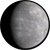
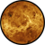
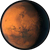
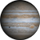
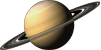
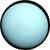
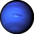

----------------------------------------------------------------------------Сонячна система----------------------------------------------------------------------------
Сонячна система утворилася близько 4,6 мільярдів років тому, і складається з 8 планет — Меркурій, Венера, Земля, Марс, Юпітер, Сатурн, Уран, Нептун з більш ніж сотнею супутників, 5 карликових планет — Церера, Плутон, Хаумеа, Макемаке, Ерида з десятком супутників, десятків малих планет, сотні тисяч астероїдів, більше тисячі комет, а також незліченної кількості метеорних тіл (від 100 метрів у поперечнику до мізерно малих порошин), що обертаються навколо свого центра — Сонця.
Всі планети умовно розділені на дві великі групи, що відрізняються масою, хімічним складом (що виявляється в різницях їхніх щільностей), швидкістю обертання і кількістю супутників:
-
Внутрішня або земна група — до неї входять:
- Меркурій – найменша планета Сонячної системи, яка має радіус всього 2440 км. Планета розташована між Сонцем і Венерою. Період обертання навколо Сонця дорівнює 88 земним дням, а оберт навколо власної осі Меркурій встигає зробити всього півтора раза. Тож доба триває 59 земних днів. Орбіта Меркурія – одна з найбільш нестабільних, змінюється не тільки швидкість переміщення і його віддаленість від Сонця, а й саме положення. Близькість до Сонця стала причиною того, що Меркурій схильний до найбільших перепадів температури серед планет Сонячної системи. Середня денна температура становить близько 350°C, а нічна – -170°C. В атмосфері виявлено натрій, кисень, гелій, калій, водень і аргон. Існує теорія, що раніше Меркурій був супутником Венери, але поки це залишається недоведеним. Власні супутники у нього відсутні.
- Венеру часто називають Ранковою зіркою і Вечірньою зіркою, тому що вона першою з зірок, яку видно після заходу і перед світанком. Атмосфера планети майже повністю складається з вуглекислого газу. Відсоток діоксиду вуглецю становить в атмосфері 96%, азоту в ній порівняно небагато – майже 4% і в зовсім незначній кількості присутній водяна пара та кисень. Така атмосфера створює ефект парника, тож температура на поверхні досягає 475°C. Доба триває 243 земних дні, що майже дорівнює року на Венері – 225 земних днів. Багато хто називає її сестрою Землі через масу і радіус, які схожі до земних показників. Радіус Венери становить 6052 км (0,85% земного). Супутників немає.
- Земля - єдина планета в Сонячній системі, де на поверхні є рідка вода, без якої не розвинулося б життя на планеті. Радіус Землі – 6371 км й понад 70% поверхні вкрито водою. Інший простір займають материки. Планета захищена від зоряної радіації потужним магнітним полем, сформованим активним ядром (це розплавлене залізо). Один оберт навколо своєї осі – 24 години, а повне проходження по орбіті триває 365 діб. Земну добу і рік також прийняті як еталон, але зроблено це лише для зручності сприйняття часових відрізків на інших планетах. У Землі є один природний супутник – Місяць.
- Марс - червона планета розташована між Землею і Юпітером. Відстань від Марса до Сонця в середньому становить понад 227 млн км (але через еліптичну орбіту, по якій обертається Марс, відстань змінюється від 206,6 до 249,2 млн км). Один рік на Марсі триває 687 земних днів, але кількість годин на добу 24,6. Марс – невелика планета, майже у два рази менша за Землю, а маса становить лише 10,7% маси Землі. Поверхня Марса має площу 144,3 млн км² і приблизно дорівнює площі земної суші, не покритій океанами. Супутники – Фобос і Деймос. Середня температура становить близько мінус 60 градусів Цельсія. Температура змінюється в залежності від сезону, але якщо марсіанське літо нагадує земне з середньою температурою від +20 днем на екваторі, то зими – суворі з морозами в -125 на полюсах. Пилові бурі на Червоній планеті – найпотужніші в Сонячній системі, вони можуть тривати місяцями та охоплювати всю планету. Через те, що гравітація на планеті становить лише близько третини земної, людина з вагою в 60 кг на Марсі буде важити лише 22,2 кг. Марс в деякі періоди своєї активності за яскравістю затьмарює інші елементи всесвіту.
-
Зовнішня група (група планет-гігантів) — це:
- Юпітер - п'ята планета від Сонця розташована між Марсом і Сатурном. Віддалена від Сонця на 778,5 мільйонів кілометрів. Юпітер – газовий гігант, найбільша планета в Сонячній системі. Доба на Юпітері триває майже 10 годин, а рік – 4333 земних днів, тобто 11,8 року. Маса планети в 317 разів перевищує земну і становить 71% маси всіх планет Сонячної системи. У планети є 67 супутників, а 4 з них, відкриті в 1610 році Галілео Галілеєм, викликають підвищений інтерес вчених: Іо, Європа, Ганімед і Каллісто. Тришарова атмосфера Юпітера складається на 9/10 з водню і на 1/10 з гелію. Температура на поверхні становить близько -150°C, на глибині 150 км – +150°C, ближче до центру підвищується до ~ 6000°C. Велика червона пляма – це ураган, ширина якого майже в 3 рази перевищує діаметр Землі. Протяжність блискавок у вихорах Юпітера може перевищувати десятки тисяч кілометрів. Парадокс, але температура в місцях на поверхні планети, куди падають тіні від супутників вище, ніж на освітленій частині. У Юпітера є кільця як і у Сатурна, проте їх товщина значно менше і вони майже не помітні.
- Сатурн – друга за розмірами планета у порівнянні з іншими планетами й найбільш схожа на Сонце за складом хімічних елементів. Радіус поверхні – 57350 км, рік становить 10 759 діб (майже 30 земних років). Доба – 10,5 земних годин. До складу атмосфери входять: CH4, H2, He, NH3. Ядро розпечене до 11700°C і виробляє більше тепла, ніж планета отримує від Сонця. Чим вище підійматися, тим нижче падає температура. На верхівці температура утримується на позначці в -180°C і 0°C на глибині в 350 км. Кількість супутників – 62. Найбільшим супутником Сатурна є Титан. Трохи менші за розміром – Енцелад, Рея, Діона, Тефия, Япет і Мимас. Довгий час кільця на Сатурні вважалися унікальним явищем, притаманним тільки йому. Лише недавно було встановлено, що кільця є у всіх газових гігантів, але в інших вони не настільки помітні.
- Уран – найхолодніша планета, а радіус – 25267 км. Температура досягає -224 градусів за Цельсієм. Тривалість року – 30 685 діб в земному обчисленні (майже 84 роки), доба – 17 земних годин. Через сильний нахил осі планети, здається, ніби планета не обертається, а котиться, наче куля. Уран має 13 кілець. У центрі Урана є ядро, яке складається з каменю та заліза. До складу атмосфери входять: H2, He, CH4 (14%). Супутників всього 27. Найбільш відомі Титанія, Аріель, Оберон, Умбріель і Міранда.
- Нептун – єдина з планет, яка була відкрита не завдяки спостереженням, а за допомогою математичних розрахунків. Радіус – 24547 км. Рік на планеті дорівнює 60 190 діб (приблизно 164 земних років). Осьовий нахил – 28 градусів, а оберт виконує за 16 годин. Нептун складається з газу, містить воду, аміак і метан, який концентрується в атмосфері та надає планеті блакитний колір. В атмосфері зафіксовані найсильніші вітри у нашій системі, швидкість яких досягає 320 км/г. Температура падає до -220°C. Ядро прогрівається до 5200°C. Планета має 5 кілець. Супутників – 14. Найвідоміші з них – Тритон, третій в сонячній системі супутник, який має атмосферу, Протей і Нереїда.
Усі великі планети обертаються навколо Сонця в одному напрямку (в напрямку осьового обертання самого Сонця), по майже кругових орбітах, що мало нахилені одна до одної (і до сонячного екватора). Площина земної орбіти — екліптика — береться за основну площину при розрахуванні нахилень орбіт планет та інших тіл, що обертаються навколо Сонця.
Відстані планет від Сонця утворюють закономірну послідовність — проміжки між сусідніми орбітами зростають з віддаленням від Сонця. Ці закономірності руху планет разом з розподілом їх на дві групи за фізичними властивостями вказують на те, що Сонячна система не є випадковим скупченням космічних тіл, а виникла в єдиному процесі. Тому вивчення кожного з тіл Сонячної системи проливає світло на походження всієї Сонячної системи, а разом з тим і на походження, еволюцію і сучасну будову нашої Землі.
Завдяки майже круговій формі планетних орбіт і великим проміжкам між ними виключена можливість тісних зближень між планетами, при яких вони могли б істотно змінювати свій рух у результаті взаємних притягань. Це забезпечує тривале існування планетної системи.
Планети обертаються також навколо своєї осі, причому у всіх планет, крім Венери й Урана, обертання навколо осі відбувається у тому ж напрямку, що і обертання навколо Сонця. Надзвичайно повільне обертання Венери відбувається в зворотньому напрямку, а Уран обертається, ніби лежачи на боці.
В астрономії прийнято вимірювати відстань в астрономічних одиницях. Одна астрономічна одиниця дорівнює середній відстані від Землі до Сонця і становить 149,6 млн км. За нашими оцінками, розміри Сонячної системи величезні. Так, відстань від Сонця до Нептуна, останньої великої планети Сонячної системи, становить майже 30 а. о. Але зона впливу Сонця насправді набагато більша, воно здатне своїм гравітаційним полем утримувати планети на відстані 230 000 а. о.
Наймасивніше тіло Сонячної системи — це, звичайно ж, Сонце. Якщо не враховувати космічний пил, то на масу Сонця припадає 99,87% загальної маси системи.
Звичайно, крім планет, у Сонячній системі є безліч інших об’єктів — це супутники планет, малі планети та астероїди, комети і космічний пил. Всі планети Сонячної системи не перебувають у спокої, а обертаються навколо власної осі й рухаються навколо Сонця. Сама Сонячна система, у свою чергу, рухається навколо центра галактики зі швидкістю 250 км/с з повним періодом оберту близько 200 млн років.
-------------------------------------------------------------------------------Порівняльні характеристики планет Сонячної системи -------------------------------------------------------------------------------
 Меркурій ---------------- 0,387 ------------------------------------- 88 діб ----------------------------------- 58,6 доби ----------------------- 4878 ----------- 3,28×1023 ------------------------- 0 --------------------------------- 5,44 ----------------------------- 0,21 ------------------------- 7° ------
 Венера ------------------- 0,72 ------------------------------------- 224,7 доби ------------------------------ 243 доби ----------------------- 12104 ----------- 4,87×1024 ------------------------- 0 --------------------------------- 5,5 ------------------------------- 0,007 ----------------------- 3,4° ----
Земля --------------------- 1 ---------------------------------------- 365,24 доби ------------------------------ 24 години -------------------- 12756,3 --------- 5,98×1024 ------------------------- 1 --------------------------------- 5,52 ------------------------------ 0,017 ----------------------- 0° ------
 Марс ---------------------- 1,52 ------------------------------------ 686,98 діб -------------------------------- 24,5 години -------------------- 6794 ----------- 6,44×1023 ------------------------- 2 --------------------------------- 3,95 ------------------------------ 0,093 ----------------------- 1,85° --
 Юпітер ------------------- 5,2 -------------------------------------- 11,86 року -------------------------------- 10 годин --------------------- 142600 ----------- 1,9×1027 -------------------------- 4 --------------------------------- 1,33 ------------------------------ 0,048 ----------------------- 1,3° ---
 Сатурн ------------------- 9,54 ------------------------------------- 29,46 року -------------------------------- 10,2 години ------------------ 120660 ----------- 5,68×1026 ----------------------- 10 --------------------------------- 0,68 ------------------------------ 0,056 ----------------------- 2,5° ---
 Уран --------------------- 19,22 ------------------------------------ 84,01 роки -------------------------------- 17 годин ----------------------- 51200 ----------- 8,7×1025 ------------------------- 5 ---------------------------------- 1,26 ------------------------------ 0,047 ---------------------- 0,77° ---
 Нептун ------------------ 30,06 ----------------------------------- 164,79 року ------------------------------- 17,8 години -------------------- 49500 ----------- 1,03×1026 ----------------------- 3 ---------------------------------- 1,67 ------------------------------ 0,009 ---------------------- 1,77° ---